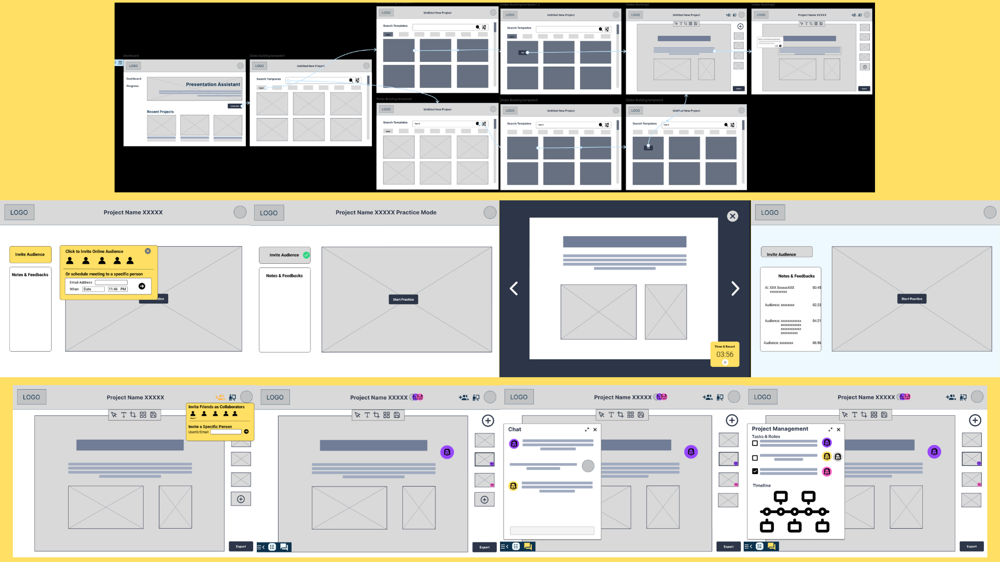

Preasy - A UX Case Study on Rethinking Presentation Preparation
Preasy is a web app which helps users efficiently create slides, rehearse presentations with feedback, and manage team workflows. It supports students and professionals who struggle with clear and confident presentations due to unpreparedness and poor structure.
Role: UX researcher & product designer (individual project)
Timeline: 6 weeks · 2025
Tools: Figma, Mural, Adobe Photoshop

Problem
Presentation preparation is rarely streamlined.Students and professionals jump between tools for design, rehearsal, feedback, and collaboration—causing friction, confusion, and stress.
Objective
Research, plan, and design a web experience to help users prepare presentations more efficiently, with a focus on reducing prep time and improving delivery confidence through a unified workflow.
Research Overview
I wanted to understand how individuals prepare for presentations—what slows them down, what tools they use, and what support they need but lack.
Competitive Analysis: Most existing tools focus on AI speech analysis and generation, but offer little support for interactive Q&A simulations or team management features.

User Research Insights: I interviewed 4 users from different academic backgrounds and collected over 10 survey responses to identify common behaviors and challenges. This revealed 3 key pain points: users found it difficult to rehearse effectively on their own, feedback from peers was often unclear or inconsistent, and team projects frequently suffered from conflicting slide versions and poor coordination.
Conceptualize
Faced with diverse presentation habits and workflows, I needed to identify which moments in the process mattered most."Where exactly do users feel friction, and how can I reduce it without overwhelming them with tools?"
Affinity Map Takeaways:
1. Question-driven feedback improves the effectiveness of rehearsal.
2. Clear collaboration management reduces friction and version conflicts in team projects.
3. Structured storytelling helps presenters communicate ideas more clearly and confidently.

User Persona & Journey Map:


Ideation & Strategy
Clarity: Content Structuring & Slide Assistance
Confidence Building: Practice Session with Integrated System / Real Audience
Seamless Teamwork: Real-Time Team Notifications & Collaboration

From brainstorming, I eventually defined 4 key features of the product.
Practice Mode with timer and rehearsal feedback
Feedback Tags to ask for help on specific issues like pacing
Team Dashboard to assign slides and track progress
Slide Progress Tracker to visualize completion and readiness
User Flow Chart & Early Sketches:


During early testing, I found that users preferred to stay in control rather than rely on full AI automation. Most of them valued real audience feedback and asked for a live chat feature to support group project management.
Iterated Wireframes:

Branding & Visual Identity
Preasy's visual design uses clean layout grids, soft neutral tones, and a balance of utility and friendliness. The logo and font choices aim to convey approachability without sacrificing focus. I created the design system with reusable components and scalable text styles.
Familiar Visual Language: Inspired by well-known productivity tools to reduce learning curve and boost user confidence.
Accessible & Readable: High contrast, clean type, and scalable components ensure clarity across devices.
Trustworthy Look & Feel: Used structured layouts and calm, neutral colors to convey focus, stability, and professionalism.
Design System:


User Testing
After usability testing with peers and professors, I received feedback on hierarchy clarity, button size, and onboarding cues. Iterative refinement improved discoverability and supported different workflows.
Overall Design Highlights
All-in-One Prep Hub: Replaced the need for scattered tools by combining steps in one platform.
Flexible Practice & Feedback Options: Support both solo rehearsal with AI and peer feedback sessions, trackable record archive.
Built-in Team Coordination: Streamlined task management, shared timelines, and live chat for seamless teamwork.
Reflection
This was the first time I led a UX project through a full cycle—from research to case study documentation. I improved in narrowing scope, prioritizing features, and presenting insights clearly. Seeing how real feedback shaped the product was exciting and humbling. Preasy confirmed my passion for UI/UX digital product design and helped me grow into a more intentional designer.